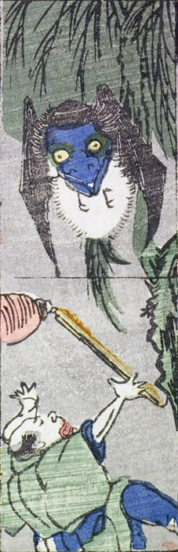

木の下に現れた巨大な蝙蝠の化物。大きさが人の背丈ほどもあり、顔は青く人間のようである。提灯を持った男を襲っている。
著作者：一恵斎芳幾（歌川芳幾）／出典：親書誌：U426_nichibunken_0142：新板化物づくし；シンパンバケモノヅクシ／日付：2009／資源識別子：U426_nichibunken_0142_0021_0000
Copyright (c)2010- International Research Center for Japanese Studies, Kyoto, Japan. All rights reserved.